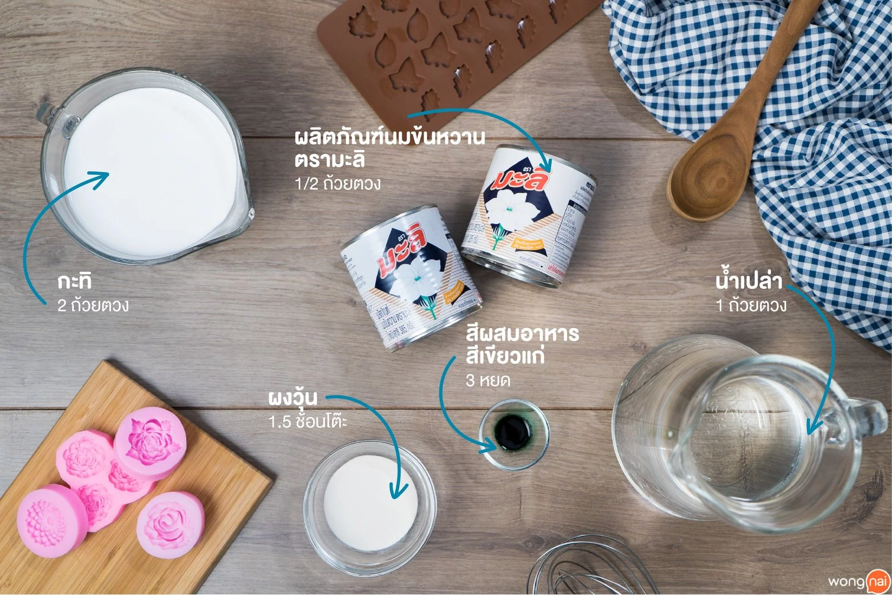
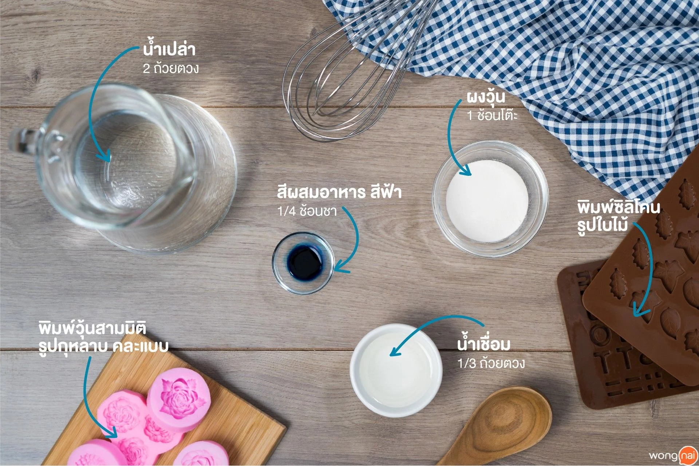

วัตถุดิบสำหรับทำวุ้นกะทิ • ผลิตภัณฑ์นมข้นหวาน ตรามะลิ 1/2 ถ้วยตวง
• กะทิ 2 ถ้วยตวง
• น้ำเปล่า 1 ถ้วยตวง
• ผงวุ้น 1.5 ช้อนโต๊ะ
; • สีผสมอาหาร สีเขียวแก่ 3 หยด

วัตถุดิบสำหรับทำวุ้นใส • น้ำเปล่า 2 ถ้วยตวง
• น้ำเชื่อม 1/3 ถ้วยตวง
• ผงวุ้น 1 ช้อนโต๊ะ
• สีผสมอาหาร สีฟ้า 1/4 ช้อนชา
อุปกรณ์
• พิมพ์เค้กซิลิโคน ขนาด 1 ปอนด์
• พิมพ์วุ้นสามมิติ รูปดอกมะลิ คละแบบ
• พิมพ์ซิลิโคน รูปใบไม้
วิธีการทำ
STEP 1 : ทำวุ้นกะทิ
• นำกะทิใส่ลงในหม้อ ตามด้วยน้ำเปล่าและผงวุ้น คนให้ส่วนผสมเข้ากันแล้วพักไว้ เป็นเวลา 10 นาที เพื่อให้ผงวุ้นดูดน้ำเมื่อเวลาโดนความร้อนจะทำให้ผงวุ้นละลายได้ง่ายขึ้น
• เมื่อครบเวลานำหม้อขึ้นตั้งไฟ โดยใช้ไฟกลางแล้วคอยคนหม้อเรื่อย ๆ เพื่อไม่ให้ผงวุ้นตกลงไปอยู่ก้นหม้อ
• เติม ผลิตภัณฑ์นมข้นหวาน ตรามะลิ ลงไปในหม้อแล้วคนให้เข้ากัน จนกว่าน้ำกะทิจะเดือดพล่านแล้วค่อยลดไฟลง โดยเราจะอุ่นน้ำกะทิแบบนี้ไว้ เพื่อไม่ให้เซตตัว ซึ่งเราจะใช้หยอดลงในพิมพ์วุ้น
STEP 2 : ทำวุ้นใสสีฟ้า
• นำน้ำเปล่าเติมลงไปในหม้อ ตามด้วยน้ำเชื่อมและผงวุ้น คนให้ส่วนผสมเข้ากันแล้วพักไว้ เป็นเวลา 10 นาที เพื่อให้ผงวุ้นดูดน้ำเมื่อเวลาโดนความร้อนจะทำให้ผงวุ้นละลายได้ง่ายขึ้น
• นำหม้อขึ้นตั้งไฟ โดยใช้ไฟกลางแล้วคอยคนหม้อเรื่อย ๆ เพื่อไม่ให้ผงวุ้นตกลงไปอยู่ก้นหม้อ
•เติมสีผสมอาหาร สีฟ้าลงไปในหม้อ แล้วคนให้เข้ากันจนเดือดพล่านแล้วค่อยลดไฟลง โดยเราจะอุ่นไว้แบบนี้ เพื่อไม่ให้เซตตัว ซึ่งเราจะใช้หยอดลงในพิมพ์วุ้น
STEP 3 : ทำฐานเค้ก
• ชั้นที่ 1 ใช้ถ้วยตวงขนาด 1/2 ถ้วยตวง ตักวุ้นกะทิ (STEP 1) เทลงไปในพิมพ์ แล้วรอให้วุ้นกะทิเซตตัวประมาณ 10 นาที แล้วค่อยทำชั้นต่อไป
• ชั้นที่ 2 ใช้ถ้วยตวงขนาด 1/2 ถ้วยตวง ตักวุ้นใสสีฟ้า (STEP 2) เทลงไปในพิมพ์ แล้วรอให้วุ้นใสสีฟ้าเซตตัว ประมาณ 10 นาที แล้วค่อยทำชั้นต่อไป
• ชั้นที่ 3 ใช้ถ้วยตวงขนาด 1/2 ถ้วยตวง ตักวุ้นกะทิ (STEP 1) เทลงไปในพิมพ์ แล้วรอให้วุ้นกะทิเซตตัวประมาณ 10 นาที แล้วค่อยทำชั้นต่อไป
• ชั้นที่ 4 ใช้ถ้วยตวงขนาด 1/2 ถ้วยตวง ตักวุ้นใสสีฟ้า (STEP 2) เทลงไปในพิมพ์ แล้วรอให้วุ้นใสสีฟ้าเซตตัว ประมาณ 10 นาที แล้วคว่ำพิมพ์วุ้นลงในถาดที่ต้องการจัดเสิร์ฟ เพื่อวางด้วยดอกมะลิ
STEP 4 : ทำใบไม้สำหรับตกแต่ง
• ตักวุ้นกะทิ (STEP 1) ประมาณ 1/2 ถ้วยตวง ใส่ในถ้วยผสม
• นำสีผสมอาหาร สีเขียวแก่ ใส่ลงไปในวุ้นกะทิ แล้วคนให้เข้ากัน
• นำมาหยอดลงในพิมพ์ซิลิโคน รูปใบไม้ แล้วนำพักไว้ 10 นาที เพื่อให้วุ้นเซตตัว
• แกะออกจากพิมพ์แล้วพักไว้สำหรับตกแต่ง
STEP 5 : ทำดอกมะลิ
• ตักวุ้นใสสีฟ้า (STEP 2) หยอดลงในพิมพ์ดอกมะลิแค่เล็กน้อย เพื่อให้ดอกมะลิมีสี เมื่อหยอดเสร็จรอให้เช็ตตัว เป็นเวลา 5 นาที ก่อนหยอดวุ้นกะทิเพิ่ม
• ตักวุ้นกะทิ (STEP 1) หยอดลงในพิมพ์มะลิจนเต็ม ก่อนนำไปพักไว้ เป็นเวลา 10 นาที เพื่อให้วุ้นเซตตัว จากนั้นแกะออกจากพิมพ์ เตรียมตกแต่งบนหน้าเค้กวุ้น
STEP 6 : ตกแต่งหน้าเค้ก
• นำวุ้นดอกมะลิที่เตรียมไว้ (STEP 5) ตกแต่งบนฐานเค้กตามต้องการ
• นำวุ้นใบไม้ที่เตรียมไว้ (STEP 4) วางตกแต่งแทรกลงในดอกมะลิตามต้องการ
• เมื่อตกแต่งเสร็จแล้วนำวุ้นกะทิดอกมะลิแช่เย็น เป็นเวลา 1-2 ชั่วโมง ก่อนนำไปเซอร์ไพรส์คุณแม่นะจ๊ะ!
ขอขอบคุณข้อมูลและภาพประกอบจาก
เว็บไซต์:https://www.wongnai.com/recipes/coconut-jelly